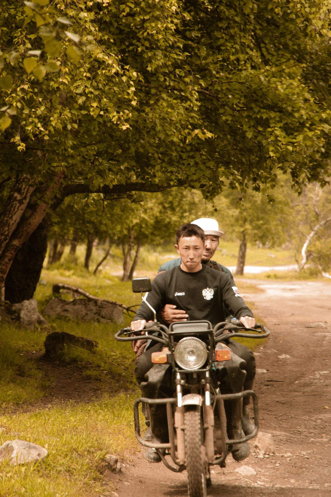

Героям
Расскажите свою историю
Мы приезжаем к тем, кто своим делом меняет жизнь небольшой территории. Публичность и опыт интервью не нужны, важно само дело и ваша готовность о нём говорить.
- Видимость и признание вклада
- Возможность поделиться видением мира и своей историей
- Связь с другими героями проекта из разных регионов
- Продвижение вашего дела и возможные коллаборации
- Печатный зин с вашей историей и материалы съёмки